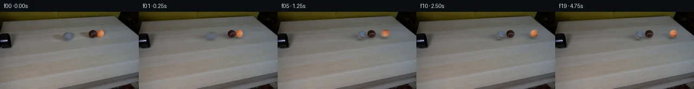

![首帧]()

Round 00
2026-11-05T12:49:07.515058+00:00像素候选变化代码 +219/−0inspection 更新
pixels 070701f5e1324212 · code 613400c64a422cfc
查看本轮 generate.py 真实 diff
--- previous/generate.py
+++ current/generate.py
@@ -0,0 +1,219 @@
+"""PixelWorld case_0028 generation.
+
+Grey tennis ball rolls right out of the black pipe and strikes the brown ball;
+the contacting orange ball is knocked away and rolls to the right while the
+brown ball nudges forward and the grey ball nearly stops.
+
+Pure local pixel operations:
+ * clean table background recovered by per-row interpolation across the
+ ball/shadow exclusion boxes (everything else is copied untouched);
+ * ball sprites cut from frame 0 as anti-aliased circular patches and rotated
+ by the rolling angle (no-slip theta = dx / r);
+ * analytic two-Gaussian soft shadows (parameters fitted to frame-0 shadows);
+ * motion blur from 5 sub-frame taps along each ball's per-frame displacement;
+ * frame 00 is the untouched first_frame.png (exact byte equality).
+"""
+from pathlib import Path
+import numpy as np
+from PIL import Image
+from scipy import ndimage as ndi
+from scipy.ndimage import map_coordinates, rotate
+
+from artifact_io import save
+
+ROOT = Path(__file__).parent
+FRAME0 = np.array(Image.open(ROOT / 'first_frame.png').convert('RGB')).astype(np.float32)
+H, W, _ = FRAME0.shape
+
+# ---------------------------------------------------------------- geometry
+BALLS = {
+ 'grey': dict(c0=(125.2, 43.6), r=7.8),
+ 'brown': dict(c0=(170.8, 40.0), r=7.7),
+ 'orange': dict(c0=(185.6, 40.2), r=7.6),
+}
+R_GREY, R_PAIR = 7.8, 7.65
+CONTACT_X = 170.8 - R_GREY - R_PAIR # 155.35: grey touches brown
+DT = 0.25
+
+# ------------------------------------------------- clean table background
+BOXES = [(96, 36, 142, 56), (140, 31, 200, 51)]
+excl = np.zeros((H, W), bool)
+for x0, y0, x1, y1 in BOXES:
+ excl[y0:y1, x0:x1] = True
+BG = FRAME0.copy()
+_xs = np.arange(W)
+for y in range(H):
+ if not excl[y].any():
+ continue
+ good = ~excl[y]
+ for c in range(3):
+ BG[y, :, c] = np.interp(_xs, _xs[good], FRAME0[y, good, c])
+for c in range(3):
+ sm = ndi.gaussian_filter(BG[:, :, c], (1.2, 2.0))
+ BG[:, :, c] = np.where(excl, sm, BG[:, :, c])
+
+# ------------------------------------------------------------- sprites
+SS = 24
+HS = SS // 2
+_lx = np.arange(SS) - HS
+_gx0, _gy0 = np.meshgrid(_lx, _lx)
+
+sprites = {}
+for name, p in BALLS.items():
+ cx, cy = p['c0']
+ r = p['r']
+ gx = _gx0 + cx
+ gy = _gy0 + cy
+ dist = np.hypot(gx - cx, gy - cy)
+ patch = np.zeros((SS, SS, 4), np.float32)
+ for c in range(3):
+ patch[:, :, c] = map_coordinates(FRAME0[:, :, c], [gy, gx], order=2, mode='reflect')
+ patch[:, :, 3] = np.clip(r - dist + 0.5, 0, 1) * 255
+ sprites[name] = patch
+
+# shadow model: two soft Gaussians (long left-cast lobe + contact darkening),
+# fitted to the observed frame-0 shadow (see .tmp/shfit.py)
+SH = dict(lobe=(-9.4, 2.9, 13.0, 3.1, 0.198), contact=(-3.7, 7.9, 5.5, 1.8, 0.291))
+_fy, _fx = np.mgrid[0:H, 0:W]
+
+def shadow_kernel(dx, dy, sx, sy, strength):
+ return strength * np.exp(-(((_fx - dx) ** 2) / (2 * sx * sx)
+ + ((_fy - dy) ** 2) / (2 * sy * sy)))
+
+def paint_shadows(canvas, positions):
+ k = np.zeros((H, W), np.float32)
+ for fx, fy in positions:
+ dx0, dy0, sx, sy, st = SH['lobe']
+ dx1, dy1, sx1, sy1, st1 = SH['contact']
… diff truncated; 132 more lines …